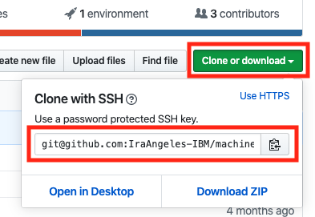
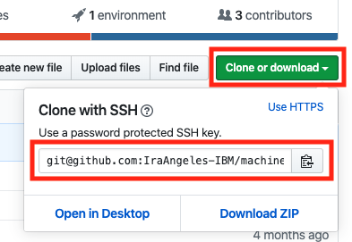

Training and Deploying Machine Learning Models with Containers
Machine learning dependencies are a hassle...
Between ensuring that the right version Python/Pip are installed on your system, and that it doesn't conflict with other Python/Pip versions on your system AND that when you deploy your model to the cloud that the versions of the dependencies you've used in your projects are still compatible with the version on your cloud-based system, it's a wonder that we ever get any time to focus on building and training our neural networks.
Fortunately, there's a way to ensure that all of this is a never a problem again - Containers! (specifically, Minishift )
With containers, we can create a clean, virtual environment to setup and train our neural networks in, and then deploy them at scale with the exact same same environment. No more dependency hell!
"But... won't that be slower?"
As with everything in life, there are caveats to this approach. You are training your network on a virtualised system, so you're not going to get the full, raw power of your machine being utilised in the training process. Even with small networks, training can take quite some time, even longer inside a virtual environment. However, if you're a machine learning focussed developer with myriad networks to iterate and train, managing all of those dependencies can take hours to configure, and there's no guarentee that if there isn't a problem on your system, that there won't be when it's deployed to the production environment.
Although this approach will take longer to train, the time savings in reducing the complexity of your setup should work to offset, and when you complete this workshop, you'll be able to deploy your model to a super-scalable OpenShift Cluser (if you so wish) where you can scale to meet the needs of your users in next to no time at all.
"Can't I just use a Virtual Environment instead?"
Absolutely, if that works for you, go for it, but depending on the virtual environment you're using, it can be equally as awkward to prepare your project as managing the dependencies manually (in fact, I had the idea for this workshop after spending 6 hours fighting with my local environment). There's also guarentee that the environment you deploy your application to will have a matching configuration without some pre-emptive tweaking.
"OK... I'm interested..."
Cracking, then let's get started!
In this workshop you will learn...
1) How to build a Convolutional Neural Network (CNN) that can detect handwritten digits (with Keras and the MNIST dataset)
2) How to train and deploy a CNN with the Flask web framework and Keras
3) How to install and run Minishift (a locally run OpenShift cluster of one image) on your machine
4) How to create a project in OpenShift
5) How to create an app in OpenShift and pull the source code for application from GitHub
By the end, you'll end up with a natty web app that will tell you what characters you're drawing, that'll look like this:

Before We Start...
It's probably best that you install Minishift before we start diving into neural networking goodness. Mofe Salami has put together a fantastic workshop that walks you through the installation and basic setup of Minishift. If you pop on over there and follow just the setup steps of the workshop, and then head back here, we'll be good to crack on.
You Will Need:
- A GitHub account
- A macOS/Windows/Linux system capable of running Minishift
- A modern web browser
Recognising Handwritten Digits with Keras + the MNIST Dataset
Training neural networks (NNs) to classify handwritten digits has become something of a "Hello, World" for developers looking to start tinkering with neural networks. The reasons for this are myriad, but three stand out:
- The dataset is small, so the network can be trained in a short space of time.
- For a very long time, computers struggled to recognise natural human input, but with NNs the problem is essentially trivial to solve (we'll likely get a > 98% accuracy with the model we'll build)
- The architecture for recognizing handwritten digits is reuseable for wider image classification cases, so if you're looking to analyse visual datasets with CNNs, MNIST is a great way to cut your teeth.
Starting Your Project
The code in this repo is a scaffold for the neural network and app that you'll end up with if you follow this workshop to the end.
So we can get the full benefit of Minishift's ability to pull code from a centralised repository and deploy it, you'll need to fork this repo to create your own version of it to work from.
You can do that with the following steps
- If you've not done so already, log in to your GitHub account (or create one here .
- Head back to this repository and then click the fork button at the very top of the UI. It looks like this:
https://github.com/IraAngeles-IBM/machine-learning-with-minishift

This will create a copy of this repository that you'll be able to make changes to, and deploy from.
- Once the forking process has completed, you need to clone it to your local system. You can do this by clicking the green "Clone or download" button just beneath the navigation for your repo, and then copying either the HTTPS or SSH link in the dialog that appears.
 

Once you've copied either link, head to your terminal and enter:
git clone <URL YOU JUST COPIED>This will copy your forked version of the project to your local system. Now we're ready to start building a neural network! 🎉
A Quick Tour
If you take a moment to look at the project you just cloned, you'll see a bunch of files and folders. Here is a brief description of each one
reference- A complete implementation of the project that we'll be making.app.py- The main entry point for our program. When we run our project shortly, Minishift will look for and execute this scriptrequirements.txt- A text file which describes which dependencies our project will need to install to support our program.server.py- The code that will serve our prediction web app.train.py- The code that contains our neural network which will begin training the first time we run our app.
Building Our Neural Network
Importing Dependencies
Before we can worry about training and/or deploying our neural network, we first need to construct it! We'll be using the demo code from the Keras documentation to get us started quickly. You can head over there to read about that (or other examples), or you can stick around here where we'll walk through a few of the blocks of code and explain their function as we work through them.
With your favourite IDE, open the file train.py. This is where the code that creates, trains, and stores our model for later deployment will live.
First, we need to import the dependencies that our project will need to run. You don't need to have these installed on your system, Minishift will take care of this later.
In train.py the following code block at the top of the file:
import tensorflow as tf
import keras
from keras.datasets import mnist
from keras.models import Sequential
from keras.layers import Dense, Dropout, Flatten
from keras.layers import Conv2D, MaxPooling2D
from keras import backend as K
Preparing our data for training
Next, we'll create a function start which our application will call to start training our model when we spin up our container (if a model hasn't already been trained).
def start():
batch_size = 128
num_classes = 10
epochs = 12
# input image dimensions
img_rows, img_cols = 28, 28
# the data, split between train and test sets
(x_train, y_train), (x_test, y_test) = mnist.load_data()
The variables batch_size, num_classes, and epochs tell our program how to digit images to load into memory and pass through our network (batch_size), how many different types of digits (or classes) there are (num_classes), and how many times to pass the entire set through the neural network during the training phase epochs.
img_rows, img_cols = 28, 28 will be used by our neural network to determine the shape of our data. Described here as:
"[...] input data has a shape of (batch_size, height, width, depth), where the first dimension represents the batch size of the image and other three dimensions represent dimensions of the image which are height, width and depth. For some of you who are wondering what is the depth of the image, it’s nothing but the number of colour channel. For example, RGB image would have a depth of 3 and the greyscale image would have a depth of 1."
(x_train, y_train), (x_test, y_test) are variables that will have the data from the MNISt dataset split up into training and validation sets that will be used by the neural network to confirm whether or not it's getting better at the job we've assigned it.
if K.image_data_format() == 'channels_first':
x_train = x_train.reshape(x_train.shape[0], 1, img_rows, img_cols)
x_test = x_test.reshape(x_test.shape[0], 1, img_rows, img_cols)
input_shape = (1, img_rows, img_cols)
else:
x_train = x_train.reshape(x_train.shape[0], img_rows, img_cols, 1)
x_test = x_test.reshape(x_test.shape[0], img_rows, img_cols, 1)
input_shape = (img_rows, img_cols, 1)
Depending on the data being processed, some image datasets will have their data stored in a 3-Dimensional array in the following order [channels][rows][cols] - This is called "channel-first" data. Conversely, other image datasets will have their information stored [rows][cols][channels] - "channel-last". This little snippet of code is just a little bit of sugar that sets up our neural network to receive the information regardless of which way around it is.
The next snippet of code is the final bit of processing of our dataset neccessary to pass it through the network we're about to construct. Copy the following code block and paste it on a new line just after the last code snippet.
x_train = x_train.astype('float32')
x_test = x_test.astype('float32')
x_train /= 255
x_test /= 255
print('x_train shape:', x_train.shape)
print(x_train.shape[0], 'train samples')
print(x_test.shape[0], 'test samples')
# convert class vectors to binary class matrices
y_train = keras.utils.to_categorical(y_train, num_classes)
y_test = keras.utils.to_categorical(y_test, num_classes)
Here, we're first casting all of the values describing each image to floats. Next, we divide those values by 255 (the maximum value for a channel - R, G, or B - in a pixel for an RGB image) so that it's a value between 0 and 1. We then print out the data for the first image from our training and test datasets
y_train and y_test contain the labels of each of the images in our datasets (otherwise our neural network wouldn't know what any of the data in x_train or x_test actually meant). With keras.utils.to_categorical(y_train, num_classes) we're converting the labels to an index in a matrix which maps to the original categorisations of the images.
Constructing our model
For our project, we're going to create a basic 2-Dimensional Convolutional Neural Network. This architecture has been shown to be very effective at recognising patterns in images, and because it's a sequential model (a model data passes from each layer to the next) it's considered to be more more legible than other similarly tasked networks.
model = Sequential()
model.add(Conv2D(32, kernel_size=(3, 3),
activation='relu',
input_shape=input_shape))
model.add(Conv2D(64, (3, 3), activation='relu'))
model.add(MaxPooling2D(pool_size=(2, 2)))
model.add(Dropout(0.25))
model.add(Flatten())
model.add(Dense(128, activation='relu'))
model.add(Dropout(0.5))
model.add(Dense(num_classes, activation='softmax'))
Our first variable model is where we'll create a reference that we can use to construct each layer of neurons in our neural network.
Next, we add a 2D Convolutional layer to our network with model.add(Conv2D(32 kernel_size=(3, 3), activation='relu', input_shape=input_shape)). This layer "convolves" around our image in an attempt to find patterns and structures that it can use in classifying our images. Adit Deshpande has written a great blog post where you can read more about what's going on in this layer, if you're so inclined.
We compound this effect with a second convolutional layer model.add(Conv2D(64, (3, 3), activation='relu')).
After that, with model.add(MaxPooling2D(pool_size=(2, 2))), we create a pooling layer, which is akin to downsampling the results of the two previous layers so that only the most prevalent features pass through to the next layer.
Our next layer is a "dropout" layer. This layer of neurons will randomly ignore input as the network is trained. This encourages the network to be more robust, by depending on a variety of connections between the next and previous layers, rather than relying on a we, heavily weighted connections which could possibly have too much of a say in the ultimate classifcation of the image.
Next, we flatten the input the input from our dropout layer with model.add(Flatten()) into a 1-Dimensional array. Up until this point, our data has maintained the original shape, albeit modified, from when we passed it through to our network.
The next layer, model.add(Dense(128, activation='relu')) a densely connected layer of neurons with a ReLu activation function serves to act as filter for neurons that have haven't received enough input to be activated. ReLu is a permissive activation function, so strong, and medium strength activations will be allowed to pass through and activate neurons in the next layer of our network, whereas weak activations will not.
Finally, we have two more layers of neurons. Another dropout layer, and another Densely connected layer. The final layer has the same number of outputs as the number of classes that we wish to categorise our images as. Each neuron corresponds to a label for each class, whichever neuron has the highest activation value will be the classification assigned to the image passed through to the network for training / prediction.
Compiling our model and training
Now that we've constructed our model, it's time to compile it. This is the stage where we tell our neural networks how to measure it's success in categorising a given input, and start passing through data for training
The following is the code that will compile our model on a new line after out last code snippet.
model.compile(loss=keras.losses.categorical_crossentropy,
optimizer=keras.optimizers.Adadelta(),
metrics=['accuracy'])
And next, we'll start passing through our data with model.fit()
model.fit(x_train, y_train,
batch_size=batch_size,
epochs=epochs,
verbose=1,
validation_data=(x_test, y_test))
score = model.evaluate(x_test, y_test, verbose=0)
print('Test loss:', score[0])
print('Test accuracy:', score[1])
Saving our model
Once our network has been trained, it's time to save our model so we can use it later. Fortunately, this is a comparatively simple affair.
The following line of code on a new line beneath our last snippet.
model.save('mnist.h5')
When our neural network has finished training, it's knowledge will be saved to a file "mnist.h5" in the same directory as our project.
Serving Our Neural Network
Once we've trained our neural network, we'll want to put it somewhere for people to use it, so we'll create a simple HTTP server with the Flask framework.
For this, we'll be working in the server.py file. Open it up for editing in your favourite IDE.
Importing Dependencies
As with our train.py we need to import the dependencies that our server will need to function - namely, Flask, Keras, and NumPy. The following code at the top of the server.py file.
from flask import Flask, request
from flask import render_template
import keras, sys, json
import numpy as np
application = Flask(__name__)
stored_model = None
We've also created two variables application and stored_model. application creates an instance of the Flask HTTP server that we can configure to listen for connections. The stored_model variable is where we'll load our trained model that we create when train.py is run.
Next, we need to define the paths that the server will serve resources on. The following block of code on a new line after stored_model:
@application.route("/")
def hello():
return render_template('index.html')
@application.route("/predict", methods=['POST'])
def classifyCharacter():
global stored_model
body = request.get_json()
reshapedData = np.array(body['data'])
reshapedData = reshapedData.reshape(1,28,28,1)
return json.dumps( { 'prediction' : int(stored_model.predict_classes( reshapedData )[0]) } )
Our first route will serve the index.html file from the resources folder (included when from the repo that we forked our copy from) when a request is made to / on our server.
The second route will accept an array of pixel values passed in a JSON formatted array to /predict. These values will be reshaped to fit the dimensions that our neural network expects as input, and will then be classified by the network. The result of the neural network is then passed back as a response to the request in JSON formatted object.
Finally, we'll create a function which we will be able to trigger to start the server listening on a given port. The following below the last block of code.
def start():
global stored_model
stored_model = keras.models.load_model('mnist.h5')
stored_model._make_predict_function()
application.run(host='0.0.0.0', port=8080)
Before we start listening for requests from client, we need to load our trained model for classifying our inputs with keras.models.load_model('mnist.h5').
Once that's loaded, we'll tell our Flask server to start listening for requests. By default, Minishift will pass through traffic to an application on port 8080. As such, we will tell our server to listen for requests on that port.
To train, or to serve?
So, now we have code to train and code to serve it to people once it's ready, but how will Minishift know what to do when?
Simple! We'll write a little bit of code that will check if there's a model ready to be used, if there is, we'll start our server. If there isn't, then we'll train our model, and start the server when it's finished.
When Minishift creates a pod with a Python application, it looks for an app.py file to run. In this file, we'll import our train.py and serve.py files as dependencies, check whether a model exists, and then act accordingly.
The following code block is in app.py file...
import tensorflow as tf
import os.path
import server
# Check if pre-trained model already exists
if not os.path.exists('mnist.h5'):
import train
train.start()
print('Training complete. Starting server')
server.start()
else:
print('Model exists. Starting server')
server.start()
Now it's time for some Minishift goodness.
Deploying our application to Minishift.
Creating our project + application
If you didn't install and setup Minishift at the start of this tutorial with Mofe's guide, go and do that now.
If you have, then it's time to fire Minishift up 🚀
In your terminal window execute the following to start Minishift:
minishift start --vm-driver hyperkit --network-nameserver 8.8.8.8
This will spin up the Minishift platform with the hyperkit driver, and allow local network traffic to access it.
Depending on your system's resource, it may take a little while to spin up, so take the opportunity to go and grab a cup of tea.
Once minishift has finished spinning up, you should see an output in your terminal a bit like the following:

Your https:// address will be different to the one displayed here.
Copy that URL and enter it into your browser. You should be presented with a login dialog that looks like this:

For the username enter developer, for the password, enter anything you like at all.
Once you've logged in, you'll be presented with the Minishift console.

Here, we can create a project and configure an app to be run. So let's do that!
In the console page, there's a big, friendly "Python" button. Click it to start creating our project.

Fill in the values for project with the following values:
Project Name
keras-mnist
Project Display Name
keras-mnist
Application Name
mnist-recognition
For the Git repository, we want to add the URL for the forked copy of the project Git repo that we just commited to. Head to your forked version and click the 'Clone or download' button again. Make sure to copy the HTTP version of the URL, as Minishift hasn't been configured to get source code over SSH. Paste that value into the Git Repository field and then click 'Next'.
You'll then see a dialog describing the creation of your project and app. Click 'Close' when this process has finished.
Building our application
At this point, Minishift will request the source code for our project and copy it to start the build process. On the right hand side of the console, you will see your newly created project. Click on it to head to the admin page for it.
On the left-hand side of your console, you will see a list of options. Once our source code has been retrieved from GitHub, Minishift will start to build our app. We can check out how that's going by clicking on Build (highlighted in red), then Builds (highlighted in green) from the menu, and then clicking on the number for our build along side our app (highlighted in blue).

This will take us through to the build status page for our app. By clicking on Logs (highlighted in orange), we can track the progress of our apps build.

Which looks like this:

Training our network
Once the build has finished, it will start our app!
On first run, our app won't have a trained network for it to make classifications with, so it'll grab the MNIST dataset and start training the neural network we created in train.py.
Depending on the system, this can take a while (what doesn't in machine learning?) but we can check on the status of the training from our console.
To view the state of our app, we can click on Applications on the left hand side of the screen (highlighted in fuscia), and then Deployments (highlighted in green).

This takes us through to our deployments page. Click on the highlighted number under 'Last Version' for your app, and that will take you to the overview for your application.
From here, we can click on the Logs tab (highlighted in red) to view the training progress of our neural network.

This will take some time to complete, so finish up your last tea, and go and grab another ☕️
Build complete! Time to play!
After our model has finished training, our server will spin up and serve a web app that we can use to play with our newly created model.
When the network has been trained, you'll see some output in your logs like the following:

The last line tells us that the server has successfully bound to the port we specified (8080) and that it's ready for traffic.
Our application is running in a pod, so we can't directly access the URL provided, but Minishift is a natty little piece of software, so it very helpfully gives us a URL that we can use to access the server in our browser.
To find the URL that we can access our app on, click on the Applications tab on the left-hand side of the screen (highlighted in yellow), and then click on Routes (highlighted in blue).

This will take you to the 'Routes' page. Once there, click on your application name, and you'll be taken through to the routes admin page for your app.
On this page, you'll see a URL (highlighted in red, but yours will be slightly different) that you can use to access the prediction web app that you may remember from the start of the document, and it's ready to go!

Click it, and you'll be taken to our application where you can click and draw a number which our neural network will classify!
Go and have some fun, but then do come back here - We're not quite done yet.
Saving our model for the big time.
So, we've trained our model, spun up our server, and classified some digits. It's been a ride, but we still need to do a few more small things to ready our app for the big time.
Minishift deployments are ephemeral in nature. If we spin down our deployment, and then spin it back up again, it'll rebuild our application from scratch, so we'll lose our model! Now, we don't want to waste valueable cycles on a public infratructure retraining a model we've just trained locally, nor do we want to have our clusters waiting for an age while that completes. Fortunatelym it's possible to save our newly trained model and have it deploy with our application when we push it to a cloud environment.
To do this, we're going to SSH into our pod and copy the file to our local system, where we'll commit it to our Git repo. This way, when we deploy on an Openshift cluster, the pre-trained model will be pulled from our repository and used straight away by our server - no further training required.
Head back to your terminal and follow these steps...
First, we need to make sure we can access the Openshift CLI tool. It should have been setup when we installed Minishift, but it doesn't always behave, so we can load it into our environment by running the followind command:
eval $(minishift oc-env)
Next, we want to login with the oc CLI tool with our developer credentials (the same user we've been using in the GUI console - don't worry, you won't need to remember your password for this)
oc login -u developer
This will set our user for our following commands.
Next, we want to get a list of pods in our deployment, which we can get with:
oc get pods
This should output something like this.

If you, like me, have run multiple builds in Minishift, you may have multiple entries, but we're not interested in those, we're only interested in the running pod.
Copy the pod name, and then run the following command to SSH into your machine
oc rsh <YOUR POD NAME>
This will give you a shell environemt that you can use to interact with your pod. At this point we want to run the following command to list the directory and find our apps current working path
ls -la && pwd
This will list all of the files and directories for our application, and then the working directory for our app, which should be something like /opt/app-root/src. Look familiar?

Notice how there's a file called mnist.h5. This is the file where our ML model is saved - that's what we want to save.
Copy the path at the bottom of the output (that's the path to our apps working directory) and then type exit. This will close our SSH connection.
With the path we've just copied, we're going to download the file to our local filesystem.
Enter the following to download the mnist.h5 file from our pod to our local filesystem
oc rsync <YOUR POD NAME>:/opt/app-root/src/mnist.h5 ./
This will write the mnist.h5 file to your local filesystem. Hurrah!
Now, we can commit that to our Git repository so that if we build our application again (either locally, or somewhere in the Cloud) it will use this pre-trained model instead of starting from scratch.
To do this, enter:
git add .
git commit -m "Saving pre-trained model for deployment"
git push origin master
And Voila! We've learned how to build, train, and deploy a neural network with Minishift.